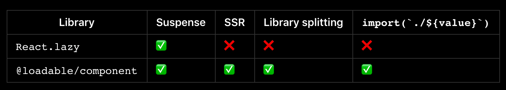

소개
기본적인 SSR(Server Side Rendering)의 개념 이해 및 React의 SSR에 대해서 살펴보고, React에서 좀더 심화된 형태의 SSR을 지원하는 방법에 대해서 알아봅니다. 이를 통해서 직접 React SSR을 구성하거나, 이미 구성된 React SSR의 구조 및 코드 파악을 할 수 있게 합니다.
SSR 의 기본 개념
- 기본적으로 SSR은 서버 연산을 통해서 Page(HTML)을 만들고, 해당 Page을 응답(response)하여서 그리는 형태입니다. 사실 static한 html을 응답하여서 화면이 그려지는 page는 SSR을 하였다고 봐도 크게 다르지 않습니다.
- 쉽게 이해하자면, React나 Vue등을 사용하여 Render하는 경우를 떠올리면 됩니다. 이 경우 아래와 같이 Render를 호출하여 그리게 되는데, 위 그림과 같이 사용자가 실제 화면(Content)을 보기까지 SSR에 비해서 시간이 좀 더 걸리게 됩니다.
ReactDOM.render(<App>, document.getElementById('root'));
보통 SSR의 장단점은 아래와 같습니다.
SSR 장점
- SEO(Search Engine Optimization, 검색 엔진 최적화)
- 빠르게 사용자에게 기본적인 화면을 보여 줄 수 있다.
SSR 단점
- 화면 이동시 화면 깜빡임(UX)
- 각 라우팅 별로 실제 서버와의 통신을 통해서 Page가 서빙 되기 때문에 발생합니다.
- 프로젝트 구성이 복잡해진다.
- 먼저 서버 코드에 있어서도 JSX를 사용할 수 있도록 빌드나 변환하는 과정이 필요
React가 제공하는 SSR
React 공식 문서를 살펴보면, SSR기능을 제공하기 위해서 React는 SSR전용 Render함수들을 제공합니다.
참고: https://reactjs.org/docs/react-dom-server.html
간략하게 살펴보면 다음과 같습니다.
- ReactDOMServer.renderToString(element)
- HTML string을 리턴 합니다. 사용자에게 빠르게 초기 화면 응답을 줄 수 있습니다.
- ReactDOM.hydrate() 함수를 동일 element에 대해서 client에서 호출한 경우, 이미 그려진 dom을 그대로 사용하면서, event handler만 추가해 줍니다.
// 개념 이해를 위한 코드 입니다. const Home = () => ( <div> Home View !!!!@@@ <li> <Link to={RoutesPath.Search}>Go Search</Link> </li> </div> ); // 위와 같은 Home React Component을 호출하면? const html = ReactDOMServer.renderToString(Home); // html은 아래와 같이 설정됩니다. const html = `<div> Home View !!!!@@@ <li> <Link to={RoutesPath.Search}>Go Search</Link> </li> </div>` - ReactDOMServer.renderToStaticMarkup(element)
- renderToString 와 동일하게 동작하지만, React가 내부적으로 사용하는 extra DOM attributes을 생성하지 않습니다. (e.g. data-reactroot)
- React을 static page처럼 사용할때 유용하지만, interactive한 page을 만들때는 사용하지 말아야 합니다.
- ReactDOMServer.renderToNodeStream(element)
- renderToString 와 동일하지만, 차이점이 있다면, HTML을 stream형태로 만들어 줍니다.
- 공식 문서상 해당 stream은 renderToString이 생성하는 결과와 완벽하게 일치합니다.
- The HTML output by this stream is exactly equal to what ReactDOMServer.renderToString would return.
- 리턴하는 stream은 utf-8 포멧으로 encoding되어 있습니다. 만약 다른 형태의 encoding을 사용하려면 별도의 encode, decode 라이브러리를 사용해야 합니다.
- ReactDOMServer.renderToStaticNodeStream(element)
- renderToStaticMarkup의 stream버전입니다.
위 함수들은 모두 Server에서 구동해야 합니다. 서버에서 구동해서 HTML을 받아서 response하는 형태 입니다.
React에서는 기본적으로 위와 같이 SSR을 지원해주는 함수들을 제공 하고 있습니다. React는 Javascript Lib이기 때문에 보통 이러한 함수를 Server에서 구동 시에는 Node.js 서버를 통해서 구동하게 됩니다.
SSR이 string 형태와 stream형태로 나누어 진다는 사실을 알 수 있습니다. 작은 크기의 html인 경우는 큰 차이가 없거나 string형태가 더 빠른 경우가 있지만, 어느정도 size가 큰 경우, stream 형태는 말 그대로 html stream을 response하기 때문에 성능 상 좀 더 빠른 이점이 있습니다.
React SSR에서 Code Split & Code Lazy Loading하기
React가 기본적으로 SSR을 지원하지만, Code Split이나 Code Lazy Loading등을 SSR에서 잘 지원하지 못해서, 해당 기능을 제공하는 별도의 Lib을 사용하는 것이 좋습니다. @loadable/component 는 React SSR + Code Split + Lazy Loading을 지원하는 대표적인 Lib중 하나입니다.
@loadable/component 소개
- 참고: https://loadable-components.com/docs/getting-started/
- loadable/component는 사실 SSR에 앞서, Code Split와 Lazy Loading을 지원하기 위해 나왔습니다. 따라서 굳이 SSR을 하지 않더라도, 사용성 높은 Lib입니다.
- 추가적으로 React가 제공하는 기본 lazy보다 SSR및 Lazy Loading시 더 좋은 기능을 제공하고 있습니다.

- 또한 webpack 와 babel에 호환성이 높아 해당 형태의 프로젝트 구성을 쉽게 할 수 있습니다.
@loadable/component 로 React SSR하기
- React SSR을 구현하는 코드로 설명합니다.
Client Code
import { loadableReady } from '@loadable/component'
loadableReady(() => {
const root = document.getElementById('main')
hydrate(<App />, root)
})
- loadable component는 기본적으로 script을 async하게 load하고 동시에 필요한 script을 parallel하게 로딩 합니다. 따라서 해당 script의 사용가능(ready)을 체크하고 사용하도록 하고 있습니다.
Webpack Config (client code)
const LoadablePlugin = require('@loadable/webpack-plugin')
module.exports = {
// ...
plugins: [new LoadablePlugin()],
}
- LoadablePlugin을 필수로 추가해 주어야 합니다. 해당 plugin은 Server에서 사용하게 되는, loadable-stats.json 파일을 생성합니다.
- loadable-stats.json 파일은 클라이언트 build시 Code Split 되어지는 Component의 Chunk 관련 ‘이름’, ‘위치’, ‘크기’ 등의 정보를 가지게 됩니다.
Babel Config
{
"plugins": ["@loadable/babel-plugin"]
}
- babel 변경시 정보를 추가하거나, 기존 정보가 누락되지 않도록 해당 플러그인을 추가 해줍니다.
Server (Node) - Normal(String)
import { ChunkExtractor } from '@loadable/server'
// This is the stats file generated by webpack loadable plugin
const statsFile = path.resolve('../dist/loadable-stats.json')
// We create an extractor from the statsFile
const extractor = new ChunkExtractor({ statsFile })
// Wrap your application using "collectChunks"
const jsx = extractor.collectChunks(<YourApp />)
// Render your application
const html = ReactDOMServer.renderToString(jsx)
// You can now collect your script tags
const scriptTags = extractor.getScriptTags() // or extractor.getScriptElements();
// You can also collect your "preload/prefetch" links
const linkTags = extractor.getLinkTags() // or extractor.getLinkElements();
// And you can even collect your style tags (if you use "mini-css-extract-plugin")
const styleTags = extractor.getStyleTags() // or extractor.getStyleElements();
const html = `<html>
<head>${linkTags}</head>
<body>
<div id="root">${html}</div>
</body>
</html>`
res.send(html);
- loadable-stats.json 파일을 사용해서 서버에서 필요한 component을 extract합니다.
- extract한 파일을 이용하여, ReactDOMServer의 SSR함수를 통해서 html을 생성합니다.
- 추가로, prefetch, style, SSR이후 Client Render(interactive page)을 위한 파일을 얻을 수 있습니다.
- 마지막으로 FULL HTML을 생성하여 response합니다.
Server (Node) - Stream
import { renderToNodeStream } from 'react-dom/server'
import { ChunkExtractor } from '@loadable/server'
// if you're using express.js, you'd have access to the response object "res"
// typically you'd want to write some preliminary HTML, since React doesn't handle this
res.write('<html><head><title>Test</title></head><body>')
const statsFile = path.resolve('../dist/loadable-stats.json')
const chunkExtractor = new ChunkExtractor({ statsFile })
const jsx = chunkExtractor.collectChunks(<YourApp />)
const stream = ReactDOMServer.renderToNodeStream(jsx)
// you'd then pipe the stream into the response object until it's done
stream.pipe(res, { end: false })
// and finalize the response with closing HTML
stream.on('end', () =>
res.end(`${chunkExtractor.getScriptTags()}</body></html>`),
)
- stream형태의 경우 string형태와 조금 다르게 구동됩니다.
- stream의 경우, React의 SSR 함수를 통해서 얻은 stream객체를 통해서 response을 수행합니다.
- string형태와 동일하게 stream 완료 시점(stream.on(‘end’))에 script tag을 추가하여, SSR이후 Client Render(interactive page)을 구현 할 수 있습니다.
Streaming rendering 의 경우 prefetch 은 지원하지 않습니다.
React Module Style And SSR
Module Style 이란?
참고: https://create-react-app.dev/docs/adding-a-stylesheet
일반적으로 style(css)은 js코드와 별개로 html상에서 loading됩니다. module style은 이와 달리, js파일에서 style을 load 하고 해당 style을 bind(사용)하는 형태의 코드를 말합니다.
Button.css
.Button {
padding: 20px;
}
Button.js
import React, { Component } from 'react';
import './Button.css'; // Tell webpack that Button.js uses these styles
class Button extends Component {
render() {
// You can use them as regular CSS styles
return <div className="Button" />;
}
}
module style이 react에서 공식적으로 말하는 표준이나, 권장사항은 아닙니다. 하지만 많은 개발자들이 해당 형태의 구현의 편의성과 유용성 때문에 module style의 구현을 많이 사용하는 편입니다.
참고: https://medium.com/seek-blog/block-element-modifying-your-javascript-components-d7f99fcab52b
Module Style의 구동
module style은 사실 실제 module은 아니고 사실은 css text입니다. 따라서, css text가 module처럼 동작하게 하는 부분이 필요합니다. 해당 부분은 보통 webpack와 같은 bundler(compiler)에서 인식하여, module 형태로 만들어 줍니다.
webpack.config
{
test: /\.module\.(scss|sass)$/,
use: [
(() => {
if (target === 'web') {
// to inject the result into the DOM as a style block
return { loader: 'style-loader' };
}
// extract style(css) file
return {
loader: MiniCssExtractPlugin.loader,
};
})(),
{
loader: 'css-loader',
options: { importLoaders: 1, modules: true },
}
]
},
webpack에서, js코드 내부에 module style import구문이 존재하는경우, 해당 구문을 어떻게 처리해야 할지 module rules에 정의 할 수 있습니다.
module style을 사용했을때, ‘style-loader’을 사용시, style 태그가 해당 js사용시 document.head.appendChild 형태로 동적으로 추가되게 됩니다.
Module Style SSR에서의 문제점 및 해결법
module style을 사용할때, SSR에서는 server side 는 node환경이고, 이때는 document 객체(host 객체)가 존재하지 않기때문에 syntax에러가 발생하게 됩니다.
따라서, module style을 사용하고, SSR을 사용하는 경우, 이러한 문제를 해결하기 위해서는 server render용 module style 처리와 client render용 module style처리를 분리하거나, 또는 항상 css을 extract하는 처리가 필요합니다.
- style 처리를 분리하는 경우, target node 형태의 webpack bundle 파일에서는 style import가 제외되고, targer web 형태의 webpack bundle 파일에서는 style-loader에 의해서 동적으로 style을 추가 하게 됩니다.
- 항상 css exteact하는 경우, js에 의해서 동적으로 style이 추가되지 않기 때문에 SSR시 style tag을 넣어주고, 해당 style 요청에 의해서 style이 load되도록 해주는 처리가 필요합니다. React의 SSR을 @loadable/component 형태로 구성하는 경우 style tags얻을 수 있기 때문에 SSR시 손쉽게 style을 넣어 줄 수 있습니다.
module style 와 styled component는 약간 내용이 다릅니다. styled component는 module style 개념을 도입하여 style을 component화 하고, 해당 component을 통해서, style을 적용하는 방법입니다. 따라서 styled component는 별개의 모듈(dependency)을 node_modules에 설치해야 하고, 일종의 HoC(high order component)나 context(provider)처럼, style을 적용하려는 component을 감싸는 형태의 구현이 필요합니다.
참고: styled component: https://styled-components.com/docs/basics#motivation
React Router And SSR
일반적으로 React Router을 사용하는 경우와 달리 SSR을 사용하는 경우, StaticRouter을 사용해야 합니다.
// client
<BrowserRouter>
<App/>
</BrowserRouter>
// server (not the complete story)
<StaticRouter
location={req.url}
context={context}
>
<App/>
</StaticRouter>
이는 동일 코드에 대해서, server용 client용 entry을 별개로 가져가거나, SSR시 staticRouter을 직접적으로 사용해야함을 의미 합니다. 따라서 webpack config 와 ssr(server code) 설정을 통해서 React Router사용시 SSR을 정상적으로 지원 가능하도록 코드를 구성해야 합니다.
기타
- Next.js등을 사용하는 경우 client side render와 server side render을 코드에서 구분 가능합니다. 어떻게 가능할까요?
- 실제 React에서 Render의 Start Point는 React가 제공하는 Render함수를 호출하면서 시작됩니다. 즉 ReactDOM.render(), ReactDOM.hydrate(), ReactDOMServer.renderToString(), ReactDOMServer.renderToNodeStream() 을 통해서, 구분이 가능합니다.
- 실제 Component의 props으로의 구분의 경우, INITIAL_DATA **나 props을 통해 **data을 props 으로 넘겨서 clinet에서 그려진(호출된) render인지, server에서 그려진(호출된) render인지를 구별 할 수 있습니다.